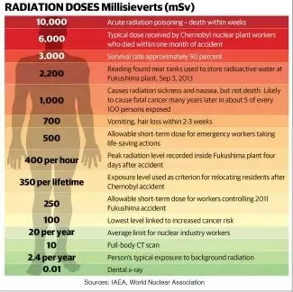

Articles and Videos
Here are some videos to watch if you want to know more about nuclear power plants and nuclear waste
Here is a link to a short video on current problems with nuclear energy and waste.
nuclear waste problem
This is a video that explains in more depth about the workings of nuclear energy
How does nuclear energy work?
This is 45 minute documentary about the creation of atomic bombs. This isn't about nuclear plants but still cause nuclear waste.
The Manhattan Project, a Documentary
Recently there has been talk of radiation leak in Washington, so here is the link to a website that talks more into detail about it.
Hanford Washington Radiation Leak
Below is a chart of the different levels of radiation and its effects on the human body: (This also relates to some famous nuclear plant incidents)
